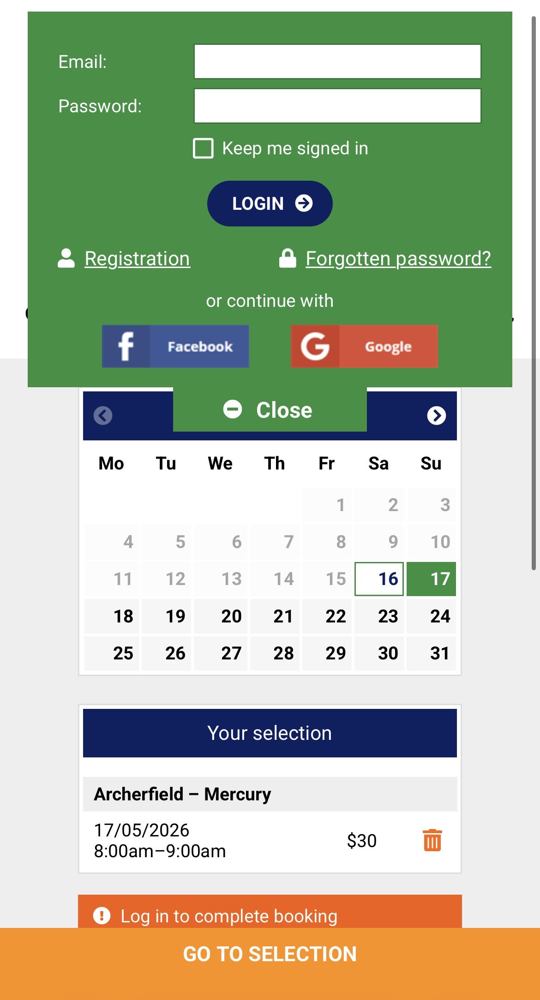
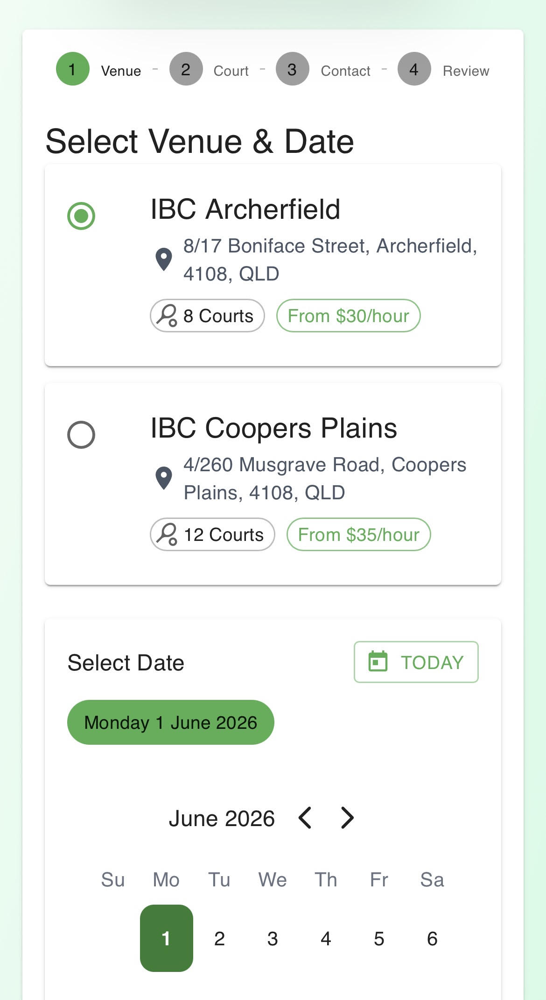
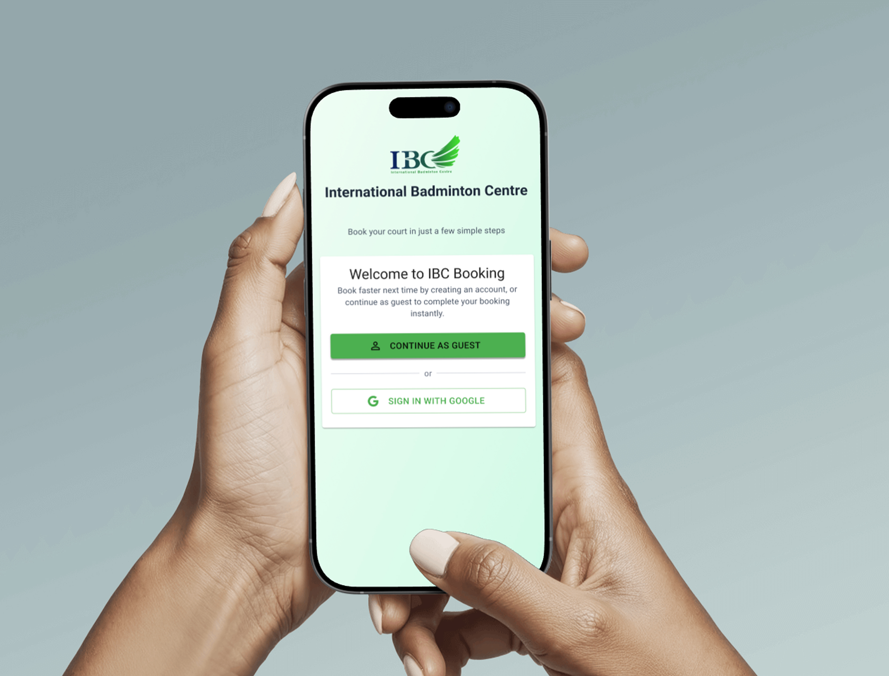
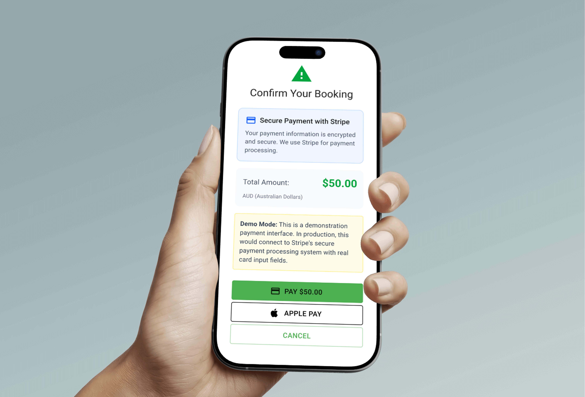
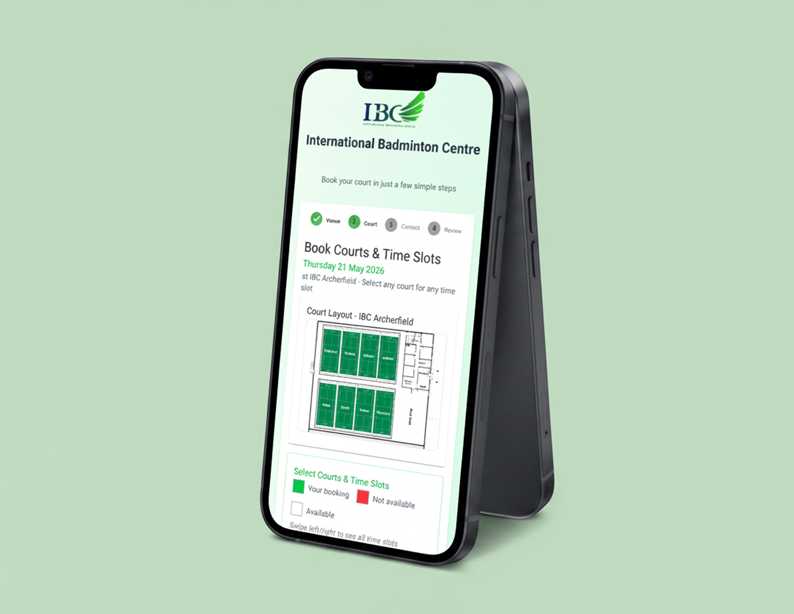
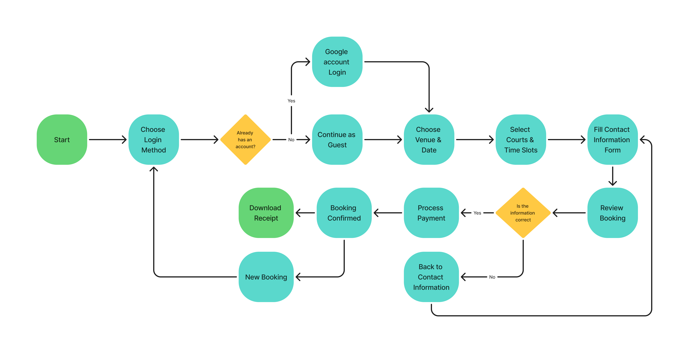

Overview
This project redesigns the online booking experience for International Badminton Centre (IBC). The goal was to improve the overall user experience by reducing friction in the booking process and simplifying court selection and payment.
The Problem
Through user feedback and personal observations, several usability issues were identified in the existing booking system. The experience felt outdated, slow, and unnecessarily complex — adding friction at nearly every step of the journey.
- Users were required to log in before making a booking
- The prepaid credit system created unnecessary friction
- Court maps were hidden in a separate section
- The booking flow and interface felt outdated and inefficient
One overwhelming page

- Login popup blocks booking immediately
- Must top up prepaid credit first
- Court map hidden on a separate page
- Everything crammed onto a single screen
- Outdated interface with no clear flow
4 focused steps, one job each

- Guest or login — your choice upfront
- Pay directly at checkout, no top-ups
- Court map embedded in timeslot selection
- Each screen has one clear task
- Modern, clean interface throughout
User Insights
Feedback from real users revealed recurring frustrations with the existing flow. The same pain points surfaced again and again — slow access, forced credit top-ups, and a confusing interface that got in the way of a simple task.
"It's annoying to top up credit every time."
"I just want to book a court quickly."
"I don't want to keep finding the court map."
"The current website feels old and difficult to use."
These insights highlighted the need for a faster and more intuitive booking experience — one that gets users to confirmation with as few steps as possible.
Design Goals
The redesign focused on five key goals to directly address the friction identified through user feedback:
- Reduce booking friction
- Support both guest and returning users
- Simplify the payment process
- Improve court discovery and selection
- Modernise the overall booking experience
The Solution
Guest + Login Booking System
Rather than forcing every user through a login wall, the redesign gives users a choice upfront. They can continue as a guest for a faster first-time booking, or log in to access a more convenient returning-user experience. This removes the single biggest source of drop-off in the original flow.

Booking entry — guest vs. login choice
Simplified Payment Flow
The prepaid credit system was removed entirely. Users now pay directly at checkout using Stripe or Apple Pay — no top-ups, no balance management, no extra steps. Payment becomes the last thing you do before confirmation, not a prerequisite.

Direct checkout with Stripe and Apple Pay
Integrated Court Map
The court map is now embedded directly into the timeslot selection step, so users can see exactly where their court is as they book. No switching tabs, no hunting for a separate page — just an informed decision made in the moment.

Court map embedded within the timeslot selection screen
User Flow
The redesigned guest booking flow removes every unnecessary gate — users go from landing page to confirmation in a straight, uninterrupted path.

Final Prototype
The full interactive prototype was built in Figma, covering the complete guest booking journey from entry to confirmation. Click through the screens below to explore the flow.
Interactive prototype — click through the full guest booking flow
Reflection
This project reinforced something I've noticed in my own design instincts — I naturally gravitate toward usability and simplicity over polish or complexity. Rather than focusing on fancy interactions or heavy visual styling, the real work here was identifying what to remove and what to streamline.
I also refreshed parts of the interface to feel more modern and approachable without losing clarity. The biggest lesson was that good booking design is almost invisible — when it works, users don't notice the design at all. They just get their court.